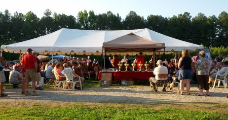

The signature Bunker Stage
Random facts and comments about the match:
- There were 376 registered shooters. I think roughly 350 participated.
- There were 3 shooters DQd.
- There were competitors from 4 foreign countries and one US territory: Italy, Chile, Venezuela, Austria, Finland and Puerto Rico
- Roughly one third of the registered shooters received a gift when they registered. These were donated by sponsors and randomly distributed.
- During this match the only job of the competitors is to shoot. Volunteers run scores and paste.
- The RSOs stay with the stage, so every shooter has the same RSO for each stage.
- Some of the competitors showed up early to walk the stages. One forgot to bring his ear protection so the Match Admministrator loaned him a set from the lost & found. They were lent out and returned on the honor system.
- There was an assortment of sun screen and bug spray at the registration station for anyone’s use.
- Shooters registered for Thursday shot all 16 stages in one day. That was the hottest day of the match and peaked just under 100 degrees. A storm rolled in and unleashed torrents about half an hour after the shooters finished for the day. The storm cooled thing off 20 degrees or so for the Fri/Sat shooters. There was no rain during any of the shooters heats.
- The host hotel, the Comfort Inn, lost power during the storm and it wasn’t restored until 2:30 the following afternoon. One of the RSOs overheard a hotel employee say, “I’ve never seen so many people prepared with flashlights.” The RSO just laughed at that… clearly they didn’t understand who was staying at the hotel.
- Due to the power outage, most of the shooters showed up Friday with no shower and no coffee. The tough folks took a cold shower.
- Friday/Saturday shooters shot the match over two days. They had one morning start at 8am and an afternoon start at 1pm. Friday morning shooters finished Saturday afternoon. Friday afternoon shooters finished Saturday morning.
- The lunch vendor served a very limited menu: Bologna Burgers & Hot Dogs on Thursday, Hamburgers and Hotdogs Friday, and back to Bologna Burgers & Hot Dogs Saturday.
- Most stages had sponsor banners and there were several vendors onsite. The result was festive!
- Friday at 7am was the staff photo. The photographer was in a Utilikilt! So at least one male shooter shot the match in a “skirt”.
- I met Jim HIcks during one of my lunch breaks and bought a copy of “Fall of the Republic: Seasons of War-Volume One“. It was one of the last 4 copies and I’m looking forward to reading it.
- Cart drivers ran bottled water to all stages continuously. There was no charge for the water and everyone was strongly encouraged to stay hydrated.
- There were small dramas. But some turned out well. We had a shooter ask to be moved to a different squad because he “heard” that the international shooter’s on his squad were difficult to deal with. The squads were packed and no one was being moved. The shooter came back at the end of the match and said he had a great time. The team he was concerned about turned out to be very friendly and there might now be an international match in his future!
- There was a paramedic on duty the entire match. He treated roughly 6 people and mostly he handed out band-aids. There were no serious injuries.
- There was a complimentary BBQ after the match completed on Saturday. All shooters and guests were invited to eat. The menu included: Shredded Pork BBQ, potatoes, green beans, a roll, dessert, and the expected southern “sweet tea”.
- Final scores were posted just after 5pm Saturday. IDPA rules state challenges can be made to the posted scores for 1 hours after posted. The awards ceremony started at 6:30pm.
- The awards ceremony included 8-10 gun giveaways in random drawings.
- Awards were given to the top shooter in each of these categories: Ladies, Juniors, International, Active Military, Senior (50+) and Distinguished Senior (65+).
- Awards were given for the top 5 places in each category of each division. Top place in the expert division won a large trophy.
- The Italian Team hosted an impromptu picnic after the awards ceremony with delicacies from Italy that included salami, cheese and grappa.
- There were still folks on-site after mid-night celebrating.

{kind=link}
Awards Ceremony
Note: any inaccuracies are my responsibility.
Do you know where I can see the match results?
Found them…Thanks!
Cool. For anyone else who is looking, they are here: http://the-carolinacup.com/results/2013/Results.pdf
A friend and I just shoot for fun and would like to come see a mach and maybe start doing 3 gun maches. My question is were is the range in Oxford, N.C. ? We near Chapel Hill.
Bob, their website is here: the-range.com but it appears to be down. You can get directions from the Cup website here: http://the-carolinacup.com/?p=direct and contact information here: http://the-carolinacup.com/?p=contact. For information on other local ranges and matches, check http://www.triangletactical.net/calendar-2/. It’s hard to take that first step – but very worthwhile.